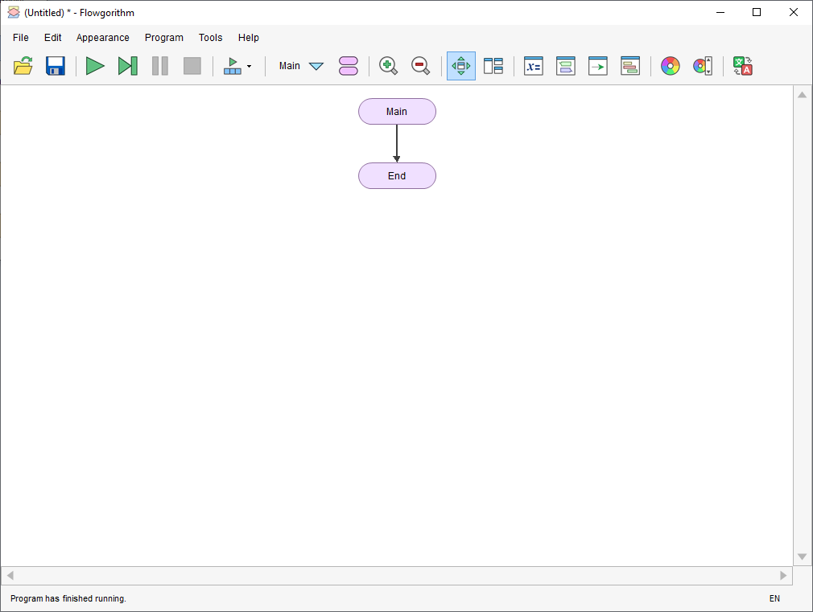

Софтвер за израду дијаграма тока¶
Flowgorithm је софтвер који омогућава корисницима израду и извршавање алгоритама користећи дијаграме тока. Софтвер је дизајниран тако да нагласи алгоритме, а не синтаксу одређеног програмског језика. Израђени дијаграм тока се може касније извести у неколико програмских језика.
Преузимање и инсталација¶
Flowgorithm је бесплатан софтвер развијен на Државном универзитету Калифорније у Сакраменту, САД. Можеш га преузети на веб сајту или кликом на следећи линк.
Преузету датотеку Flowgorithm-Setup.zip требаш распаковати и потом покренути
инсталацију двокликом на setup.exe. Инсталација је једноставна и интуитивна.
Након покретања инсталационог програма кликни на дугме Next:
{kind=link}
На следећем екрану не требаш мењати ништа, а можеш променити инсталациони
фолдер и одабрати да ли желиш да се програм инсталира за све кориснике твог
рачунара (енгл. Everyone) или само за активног корисника, односно само за
тебе (енгл. Just me). Кликни на дугме Next:
{kind=link}
Кликни на дугме Next:
{kind=link}
Одабери да се слажеш са условима коришћења (енгл. I Agree) и кликни на дугме
Next:
{kind=link}
Сачекај неколико секунди и кликни на дугме Close:
{kind=link}
Овим је инсталација програма завршена.
Прво покретање и подешавања¶
Након успешне инсталације, програм Flowgorithm можеш покренути из Старт менија.
Из главног менија програма одабери опцију Appearance, па Choose Chart Style.
Одабери Classic (Trapezoid) и кликни на дугме OK.
{kind=link}
Овим је програм покренут, подешен и спреман за рад.
{kind=link}
Hello, World¶
Обично је први програм који ученици напишу у неком програмском језику програм
који исписује поруку Hello, World!. Дијаграм тока за овај програм био би
прилично једноставан. Кликни на стрелицу између симбола Main и End и
одабери симбол за излаз, односно Output.
{kind=link}
Овим си на дијаграму тока додао симбол за излаз између симбола Main и End.
{kind=link}
Двокликом на Output можеш дефинисати излаз. Пошто излаз треба да буде текст
Hello, World!, унеси под наводницима текст "Hello, World!":
{kind=link}
Можеш приметити да се на дијаграму тока текст у симболу за излаз променио, па
сада уместо Output пише "Hello, World!":
{kind=link}
Браво! Управо си креирао први дијаграм тока.
Тестирање дијаграма тока¶
Главна предност израде дијаграма тока у програму Flowgorithm у односу на запис на папиру је могућност тестирања исправности дијаграма тока, односно могућност извршавања дијаграма тока.
Дијаграм тока можеш извршити:
притиском на тастер
F5, иликликом на икону Run
⏵, илиу главном менију кликом на
Program, па кликом наRun.
Извршавањем претходног примера на излазу се исписује текст Hello, World!.
{kind=link}
Ако си и ти добио исти резултат, значи да је и твој дијаграм тока исправан.
У наредном поглављу биће обрађени основни примери дијаграма токова са којима ћеш се сусретати у првом разреду. Касније, када почнеш да програмираш у програмском језику C, решења задатака моћи ћеш да представиш и помоћу дијаграма тока и програмским кодом.